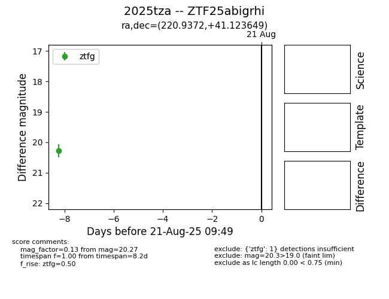

Target 2025tza at 2025-08-21 09:49, see:
FINK: fink-portal.org/ZTF25abigrhi
Lasair: lasair-ztf.lsst.ac.uk/objects/ZTF25abigrhi
ALeRCE: alerce.online/object/ZTF25abigrhi
TNS: wis-tns.org/object/2025tza
YSE: ziggy.ucolick.org/yse/transient_detail/2025tza
alt names
ZTF25abigrhi (ztf,alerce)
2025tza (tns,yse)
coordinates:
equatorial (ra, dec) = (220.9372,+41.12365)
galactic (l, b) = (71.4563,+63.05136)
photometry
last ztfg=20.27
1 ztfg detections
